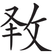

刘基
杭有卖果者，善藏柑，涉寒暑不溃[1]。出之烨然[2]，玉质而金色。置于市，贾十倍[3]，人争鬻之。予贸得其一[4]，剖之，如有烟扑口鼻，视其中，干若败絮。予怪而问之曰：“若所市于人者，将以实笾豆[5]，奉祭祀，供宾客乎？将衒外以惑愚瞽也[6]？甚矣哉，为欺也！”
卖者笑曰：“吾业是有年矣[7]，吾赖是以食吾躯[8]。吾售之，人取之，未尝有言，而独不足子所乎？世之为欺者不寡矣，而独我也乎？吾子未之思也。今夫佩虎符、坐皋比者[9]，洸洸乎干城之具也[10]，果能授孙吴之略耶[11]？峨大冠、拖长绅者[12]，昂昂乎庙堂之器也[13]，果能建伊皋之业耶[14]？盗起而不知御，民困而不知救，吏奸而不知禁，法而不知理[15]，坐糜廪粟而不知耻。观其坐高堂，骑大马，醉醇醴而饫肥鲜者[16]，孰不巍巍乎可畏，赫赫乎可象也[17]，又何往而不金玉其外，败絮其中也哉！今子是之不察，而以察吾柑！”
予默默无以应。退而思其言，类东方生滑稽之流[18]。岂其愤世疾邪者耶？而托于柑以讽耶？
[1]溃：腐烂。
[2]烨然：光亮新鲜貌。
[3]贾十倍：价格是十倍。
[4]贸得其一：买到一个。
[5]笾豆：古代祭祀用的礼器。
[6]愚瞽：傻子和瞎子。
[7]业是有年：从事这个买卖有很多年。
[8]食吾躯：养活我自己。
[9]佩虎符：佩戴兵符，即将军。皋比：披在椅子上的虎皮，指武将的座椅。
[10]洸洸（guāng guāng）：威武的样子。干城之具：捍卫国家安全的工具，即大将之才能。
[11]孙吴：古代名将孙武和吴起。
[12]峨：高。绅：腰带。戴大冠，拖长绅是文官的服饰。
[13]昂昂：扬眉吐气高傲的样子。庙堂：朝廷。
[14]伊皋：古代著名贤相伊尹和皋陶。
[15]（dù）：败坏。
[16]醇醴：味浓的美酒。饫：饱食。
[17]赫赫：显赫的样子。可象：可以效法。
[18]东方生滑稽：像东方朔那样诙谐幽默的人。
【译文】
杭州有个卖水果的人，擅长贮藏柑橘，经过冬夏也不腐烂，拿出的时候还是光彩鲜明的样子，玉石一样的质地，金灿灿的颜色。放到市场上卖，价格高出普通柑橘十倍，人们争相购买柑橘。我买到一个，切开它，像有股烟直扑口鼻，看它的里面，干得像破烂的棉絮。我对此感到奇怪，问他说：“你卖给别人的柑橘，是将要用来装满在盛祭品的容器中，供奉神灵、招待宾客的吗，还是要炫耀它的外表用来迷惑傻瓜和盲人的吗？实在太过分了，做这种欺骗的事！”
卖柑橘的人笑着说：“我从事这个行业已有好多年了。我依靠这个用来养活自己。我卖它，别人买它，不曾有人说过什么，却唯独不能满足您的要求吗？世上做欺骗事的人不少，难道只有我一个吗？你没有好好的思考。现在那些佩戴虎形兵符、坐在将军坐席上的人，那威武的样子，好像是捍卫国家的将才，他们真的有孙武、吴起的谋略吗？那些戴着高帽子，拖着长长带子的人，气宇轩昂的样子像是国家的栋梁之材，他们真的能建立伊尹、皋陶的业绩吗？偷盗四起却不懂得抵御，百姓困顿却不懂得救助，官吏狡诈却不懂得禁止，法度败坏却不懂得治理，白白地浪费国家粮食却不懂得羞耻。看看那些坐在高堂上，骑着大马，喝着美酒，吃着美食的人，谁不是高大的外表而令人敬畏，显赫过人好像值得效仿。可是无论到哪里，又有谁不是外表如金似玉、内里破败得像破絮呢？现在你不考察这些现象，却只看到我的柑橘！”
我默默地没有话用来回答。回来思考这卖柑橘人的话，觉得他像东方朔那样是诙谐多讽、机智善辩的人。难道他是对世间邪恶现象激愤痛恨之人吗？是借托柑橘用来讽刺吗？
【评析】
本文是一篇寓言体散文。作者借一卖柑橘小贩的话，用类比推理的方法讽刺、揭露官场上“金玉其外，败絮其中”“欺世盗名”的行径；以形象、贴切的比喻，揭示了元末社会盗贼蜂起，官吏贪污，法制败坏，民不聊生的现实，有力地讽刺和鞭挞了那些冠冕堂皇、声威显赫、道貌岸然的达官贵人们本质上都是“金玉其外，败絮其中”的人物，从而有利抨击了统治者及统治集团的腐朽无能，揭示了当时社会的黑暗，抒发了作者愤世嫉俗的情感。文章构思奇巧，出语蹊刻，寓意深邃。“金玉其外，败絮其中”已经凝固为成语。